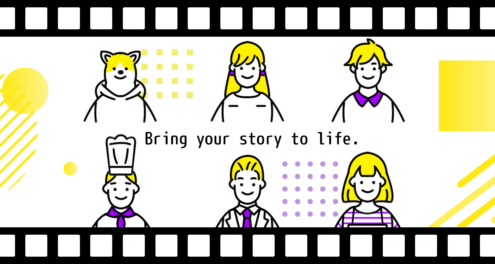

Hello, I am momotaka.
I am a freelance English-Japanese translator and multimedia content creator.
I also offer general web design services such as HTML/CSS coding, advertisement banner production, and video editing.
By translating and editing video simultaneously, not only save time and budget, I achieve results that meet your intentions through consistent work.
Please let me know how I can assist you further!
初めまして、momotakaです。
フリーランスとして、英日翻訳・Web制作・画像／動画編集・ウェブマーケティングなど、多様な業務に携わってきました。
現在はAI関連業務（評価や言語処理）を中心に取り組んでいますが、これまでの経験を活かし、柔軟に幅広い業務に対応が可能です。
このポートフォリオでは、過去の制作物や作業実績の一部をご紹介しています。
ご興味を持っていただけましたら、お気軽にご連絡ください。
海外の高校・専門学校を卒業後帰国。
貿易事務として通訳・翻訳などの英文事務が2年、英日翻訳は1年です。
■ IELTS 6.5
■ 英検準一級
20年ほど前からweb制作に纏わる作業全般を経験してきました。HTML/CSSのコーディングから、基礎的なJS・PHPの改造・設置、フォトショップ・イラストレーターなどによる画像・イラスト編集作業を行います。
また動画編集やLive2dモデリング設定に纏わるお仕事も承ります。


Petit kitty girl
※こちらのフォームはサンプルのため、現在送信機能は動作しておりません。
ご連絡はCVに記載のメールアドレスまでお願いいたします。